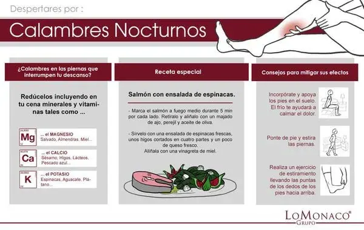

¿Te despiertas por calambres nocturnos?

Pero… ¿qué son realmente los calambres nocturnos? Suponen la contracción involuntaria y dolorosa de varios grupos musculares, que ocurren normalmente en la zona de los gemelos y que suelen durar tan sólo unos minutos. Suelen ser de origen desconocido, si bien, se pueden intensificar en el tercer trimestre del embarazo o pueden estar asociados a diferentes tipos de enfermedades orgánicas.
Exista la creencia de que directamente asociado con los calambres, se encuentra un déficit de electrolitos que alteran el funcionamiento del músculo, por lo que podríamos incluir alimentos en nuestra cena que incorporaran sales minerales y vitaminas como:
-Magnesio: que se incluye en el salvado, la miel. las almendras… etc
-Calcio: que lo encontramos en los higos, sésamo, pescado azul, lácteos… etc
-Potasio: búscalo en espinacas, aguacate y plátano.
Os proponemos de cena una receta original, sencilla, ligera y sana, con ingredientes ideales para la cena que quizás, por sus ingredientes, contribuya a la no aparición de estos molestos calambres:
Salmón con ensalada de espinacas:
Cocina un medallón de salmón a la plancha, por cada lado y añade una vinagreta de compuesta de un majado de aceite, ajo y perejil. Como guarnición añade una ensalada de espinacas frescas, higos y queso fresco.
¿Y si ya te ha despertado el calambre? ¿Qué puedes hacer?
Existen una serie de consejos, que pueden servirte para mitigar los efectos del calambre, una vez que has sufrido sus consecuencias y te has despertado. Siéntate lo más rápido que seas capaz en el borde de tu colchón y pon las plantas de los pies apoyadas en el suelo, con esta acción conseguirás que el frío calme en dolor, además puedes ponerte de pie, y estirar las piernas, asegurándote la extensión del gemelo afectado. Por último siéntate de nuevo, e intenta llevar las puntas de los dedos, lo más atrás posible, asegurando así el estiramiento de los músculos de la pierna.